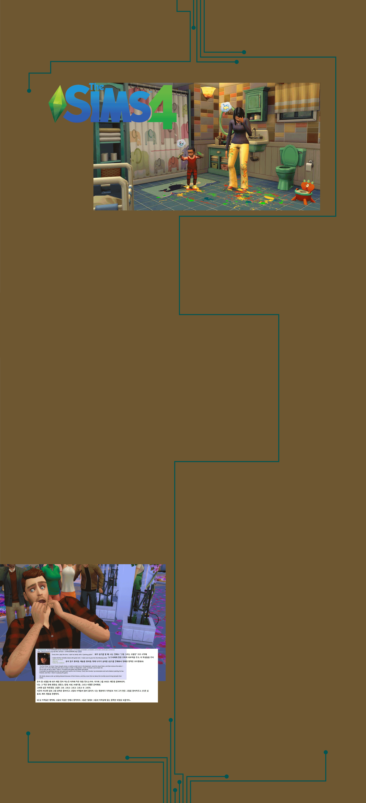

이 게임은 1999년에 발매된 이후, 세계적인 인기를 얻으며 수많은 후속작과 확장팩을 쏟아냈던 시리즈이다. 이 게임의 주된 내용은 놀이공원의 주인이 되어 공원을 짓고, 가격을 책정하며
수많은 방문객을 유치하고 좋은 공원상을 수상하기도 하는 것.
이런 것만 보면 전혀 ‘싸패 유저’가 나올 만한 게임은 아닌 것 같지만 ,
많은 시간이 지난 만큼 많은 매니아들을 보유하고 있어 희한한 플레이 방법도 많다.
한 유저는 입장료 무료에 어떤 마케팅을
해도 아무도 타지않았다는 일명
‘원심분리기’를 만들었다.
“출구 쪽 뒷 부분에 땅을 높여 2칸 높이의
공간을 만든다. 1칸은 아예 막힌길 취급이라
안 되고 무조건 2칸이어야 한다. 그럼 미로를
지나쳐 온 사람들은 지하세계로 연결되어 내림과
동시에 사람들이 사라진다.”
“ 안전한 공원상 까지 받았다. 즉 이들은 지하세계로
전입을 한 것일 뿐, 죽은 건 아니란 소리다”
- 글 중
싸패 유저가 승객을 우주로 보내는
롤러코스터를 설계하고 있는 모습이다.
이 게임은 잔잔한 시골의 분위기와
귀여운 그래픽으로 사랑받은 게임이다.
전원 생활의 느긋함을 즐기면되는 게임에
무슨 ‘ 싸패 유저’가 있나 싶겠지만.
‘싸패 유저’는 게임을 가리지않는다.
@FUCO_030 라는 한 유저의 트위터에 남긴 진솔한 고백에 따르면
‘ 1. 삽,잠자리채로 주민들 *나 때리고 다니기
2. 주민들 밀고다니기
3. 주민들 근처나 집 주위에 함정 씨앗 깔아놓기
4. 문지기한테 가서 분실물있냐 물어보고 분실물들 가져다가 팔아서 대출금 갚기
5. 너굴아저씨가 초반퀘스트로 상점근처에 보기 좋게 나무랑 꽃들 심어달라고 주는 씨앗들 우리집 마당에 뿌리기( 퀘스트 끝나고 다시 너구리한테 팔아 대출금갚기)
6. 낚시로 쓰레기 건져올려서 주민들 마당이나 마을 사무소앞에 뿌리기
7. 주민이 주민 친구한테 선물이나 편지 가져다달라고 부탁하는거 뜯어서 편지 내가 읽고 선물 너굴상점에 가져다 팔아 대출금 갚기
8. 마을 게시판에 너굴아저씨 욕 5조5억개 써봄
9. 주민한테 편지 아무말로 써놓고 필요 없는 것들(곰팡이 핀옷, 구멍난 옷) 안에 동봉해 보내주기 ’등으로 다른 플레이어들의 플레이를 검색해 보면, 모두 동물 친구들의 외모나 행동이 마음에 들지 않는다며 억지로 이사를 보내기 위해 이러한 행동들을 하고 있는 것으로 나타났다 .

심즈4는 심이라고 불리는 캐릭터들을 만들어서,
현실과 비슷한 환경을 꾸며주고 만들어 실제같은
삶을 살아보는 게임이다. 이 게임 역시 큰 성공을 거두어 18년 넘게 꾸준히 시리즈가 이어져
출시되고 있다. 이런 ‘인형놀이’게임에 무슨
싸패유저가 있을까 싶지만, 사람의 인생을
모방한다는 점에서 그 끔찍함이 타 게임과는
비교할 수가 없는 정도의 게임플레이들이 나온다.
"한번은 심을 익사로 죽인 적이 있었죠. 그리곤 그의 장례식에
모두 수영복을 입고 참가하게 했습니다."
"전 묘비로 가득찬 교회를 만들고 싶었지요. 그래서 작은 방을 만들고,
8명의 한 가족을 넣어서, 문을 없애고 불을 질렀죠. 오예, 비석 8개 추가!"
"게임 하다가 잠깐 졸았는데, 일어나 보니 아동 보호 서비스가 아이를
데려갔어요. 부모는 게임을 하고 있었고요."
그중에서도 심즈를 플레이 하는 싸패유저들마저 공포에 떨게만든 플레이는 단연 ‘지하실 고블린’괴담이다. 이 유저의 플레이에 많은 싸패유저들이 정말 유용한 팁이였다며 많은 인증글을 올리기도 했다.
내가 심즈를 할 때, 나는 언제나 "그림 그리는 고블린"으로 시작해
그에게 진한 초록색 피부를 주고
-혼자 있기 좋아함
-예술을 좋아함
-밖에 나가기 싫어함
이라는 특성을 선택하지.
돈이 좀 모였을 때 내가 제일 먼저 하는 건
지하에 작은 방을 만드는 거야. 그리곤 거기에
그를 보내고 계단을 없애버리지.
나는 그 작은 지하방에 변기, 냉장고, 침대, 쓰레기통
그리고 이젤(그림판)을 준비해주지.
그러면 심은 하루종일 그림만 그려. 그리고 그리고 그리고 또 그리지.
시간이 지나면 심의 그림 능력치는 좋아지고 그림의 가격들이 많이 올라가.
나는 몇 분마다 지하실을 확인하고 그가 만든 그림을 팔아치우고
(지하 위에 있는 다른 정상적인 심들로) 게임을 진행하지.
내 심 가족들은 행복해. 그들의 지갑은 언제나 풍족하지.
그들은 절대로 지하실에 있는 끔찍한 비밀을 모를거야...